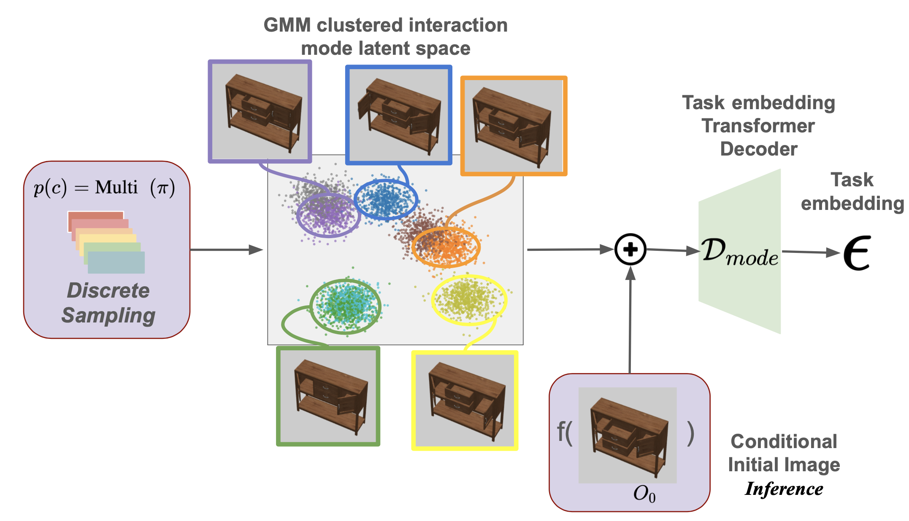

Method
ActAIM2 identifies meaningful interaction modes such as open and close drawers from RGB-D images of articulated objects and robots. It represents these modes as discrete clusters of embeddings and trains a policy to generate control actions for each cluster-based interaction.

GMM Model Selector The mode selector, a generative model, processes the differences between the initial and final image visual embeddings as generated data, using the initial image embeddings as the conditional variable.

Behavior Cloning Action Predictor Interaction mode ε is sampled from latent space embedding from model selector. 5 Multiview RGBD observations from circled cameras are back-projected and fused into a color point cloud to render novel views. Rendered image tokens and interaction mode token are contacted and fed through a multiview transformer to predict action a = (p, R, q).
Mode Selector Decoder Architecture: The depicted architecture highlights the functionality of the mode selector decoder, which is designed to process two primary inputs: multi-view RGBD images O i = (O 0 i , O 1 i , O 2 i , O 3 i , O 4 i ), and the Mixture of Gaussian (GMM) variable x. It is important to note that x can be represented as a multi-view feature vector, with our encoding approach preserving the separation of multi-view channels. Initially, the multi-view RGBD images are passed through a pre-trained VGG-19 image encoder to extract feature vectors for each view. Subsequently, these feature vectors, along with the GMM variable x, are inputted into a joint transformer. This transformer, featuring four attention layers, is tasked with producing the means and variances associated with the reconstructed task embedding ϵ.

Action Predictor Architecture: This model integrates multi-view observations directly as input, sourced from predefined cameras within the scene. The process begins with the extraction of five RGBD images, which are subsequently transformed into RGB point clouds. These are then subject to orthogonal projection to generate five novel view images. Subsequently, these novel views are partitioned into smaller patches and fed into a joint transformer. This transformer, characterized by four attention layers, integrates the sampled task embedding derived from a Mixture of Gaussian distribution. The architecture of the joint transformer encompasses eight attention layers, culminating in the production of a heatmap. This heatmap delineates the action’s translation, the discretized rotation, and a binary variable indicating the gripper’s state—open or closed.

Training Process of the Mode Selector: This figure illustrates the training procedure of the mode selector, mirroring the approach of a conditional generative model. It highlights the contrastive analysis between the initial and final observations—the latter serving as the ground truth for task embedding—to delineate generated data against the backdrop of encoded initial images as the conditional variable. The process involves inputting both the generated task embedding data and the conditional variable into a 4-layer Residual network-based mode encoder, which then predicts the categorical variable c. Following the Gaussian Mixture Variational Autoencoder (GMVAE) methodology, the Gaussian Mixture Model (GMM) variable x is computed and introduced alongside the conditional variable to the task embedding transformer decoder. This model is tasked with predicting the reconstructed task embedding, sampled from the Gaussian distribution as outlined in the architecture of the mode selector decoder, and calculating the reconstruction loss against the input ground truth data.
